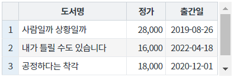

GridView의 데이터를 CSV 형식으로 다운로드 하는 예제입니다. GridView의 함수 'saveCSV'를 사용합니다. 함수 호출 시 전달 인자를 통해 데이터 구분자, 제외할 컬럼, 헤더 출력 여부 등을 설정할 수 있습니다.
CSV 형식으로 다운로드
실행된 GridView를 확인합니다.
[브라우저(Chrome) 실행 예시]

'SP5_EXAMPLE_P00239_TYPE1.csv'이 다운로드 됩니다.
다운로드 된 'SP5_EXAMPLE_P00239_TYPE1.csv'을 메모장으로 실행합니다.
컬럼 간 구분자는 ';'로 설정되고 데이터는 화면에 출력된 값으로 다운로드 됩니다.
[다운로드된 CSV 파일 예시 - 메모장]
[소스 코드 예시]
//예제 파일의 스크립트 "scwin.btn_ex1_onclick"를 참고하세요. var jsnOptions; jsnOptions = { fileName: "SP5_EXAMPLE_P00239_TYPE1.csv" //파일명 }; //GridView 'grd_exam1'의 데이터를 CSV 형식으로 다운로드합니다. grd_exam1.saveCSV(jsnOptions);
saveCSV( options )
[웹스퀘어5 SP5 개발 가이드] GridView
링크 : https://docs1.inswave.com/sp5_user_guide/bc10c1b82c9a2a0b#e1c4658baf7e726f
[웹스퀘어5 SP5 개발 가이드] GridView → CSV 다운로드
링크 : https://docs1.inswave.com/sp5_user_guide/bc10c1b82c9a2a0b#06e1b5f0872cb960